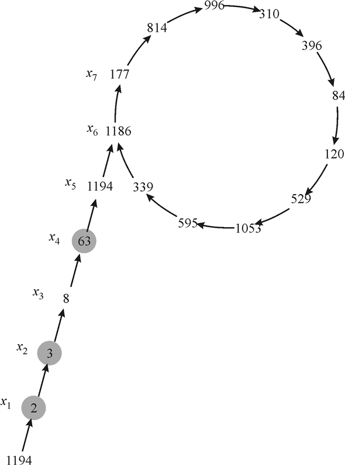

Pollard’s rho
Consider the execution history of Pollard’s rho for factorization:

Printing the factor 73 of 1387
Pollard’s rho is the heuristic approach for finding the factors of a number n. Factorization of a number is the process of decomposing the number into the product of primes. Pollard’s rho method is the heuristic approach so there is no specified running time or the guaranteed success rate exists but its effective in practice.
POLLARD’S-RHO algorithm
1. First, initialize the variable i to 1 and assign a random value to x1 by using random number generator variable y stores the recent value of xi when where k stores the even numbers starting from 2. After that we move to the loop which iterates until we find all the factors of number n.
2. Update the value of xi by squaring its most recent value and then find the greatest common divisor d by using function gcd and check if it the required value and print it.
Execution of algorithm POLLARD-RHO for n=1387:
Initially
Until all factors of n are not found:
This process repeats 16 times yieldsand
 =595
=595
So greatest common divisor
The divisors of 219 are {3, 73} and the divisors of 1387 are {19, 73}
Here 73 is the greatest common divisor of both and hence it computes.
Hence after 16 times of execution of POLLARD-RHO algorithm the value of x and y are 595 and 814 then it results in greatest common divisor 73 which is the factor of 1387.
Pollard’s rho algorithm is the best algorithm for calculating the factors of a number n.
This algorithm is based on the concept of heuristics so it always gives the best result but we can’t calculate the accurate running time of this algorithm because its loop iterates forever.
Considering t, this represents the length from the first value to the first repeated value of x in the sequence andrepresents the length of the cycle that has been produced.
For the values of t and u the algorithm of Pollard’s rho can be modified so that it returns these values at the same time when it’s calculating the factors. Algorithm is as:
POLLARD-RHO (n)
// initialize array for storing the cycle length
1.
2.
3.
4.
5. while TRUE
6.
// calculating next value of xi using recurrence
7.
// calculating greatest common divisor d
8.
// check if d is non-trivial
9. if and
10. print d
// search if d is in A or not
11. if
12. put d in
13. else if
// calculating the length of cycle u and tail
14. and
// update values of y and k for equal values of i and k
16. if
23.
24.In this algorithm first we initialize an array for the storage of cycle length, a variable i to 1 and assign a random value to by using random number generator. A variable y stores the recent value ofwhen where k stores the even numbers starting from 2.
After that we move to the loop which iterates until we find all the factors of number n.
Update the value of by squaring its most recent value and then find the greatest common divisor d by using function gcd and check if it the required value and print it. In this way all the factors of number are printed.
For running time of the algorithm we find the number of steps that are executed before the repetition of x begins and for the smallest values of t and u such that is where p is the factor of n.
Hence in the Pollard’s rho algorithm for t, the tail length and is cycle length of the rho contains their smallest values such that forthe running time is as it finds its first factor as p.
Pollard’s rho is the heuristic approach for finding the factors of a number n.
Factorization of a number is the process of decomposing the number into the product of primes.
Pollard’s rho method is the heuristic approach so there is no specified running time or the guaranteed success rate exists. But it is effective in practice.
Refer chapter 31, section 31.9 of the textbook for POLLARD’S-RHO algorithm.
The lines 1 to 4 in the algorithm are initializing statements.
These lines have no impact on the number of steps that the algorithm requires to compute factors.
The number of steps required to calculate the factor of the form is dependent on the loop in the line 5 and the block of statements from line 6 to 13.
The POLLARD’S-RHO(n) algorithm takes steps to
discover one of the prime factor  of the
given number
of the
given number  . Also the
prime factor, .
. Also the
prime factor, .
If there exist another prime factor for the
number , then to
discover this prime factor ; the while
loop in the algorithm POLLARD’S-RHO(n) will take steps
again.
If there exist prime factors for the
number , then to
discover this prime factors ; the while
loop in the algorithm POLLARD’S-RHO(n) will take steps.
Therefore, the number of steps required to the
algorithm POLLARD’S-RHO( n ) to find the
factor of the form
is
steps, where is a
prime and
.
Pollard’s rho is the heuristic approach for finding the factors of a number n. Factorization of a number is the process of decomposing the number into the product of primes. Pollard’s rho method is the heuristic approach so there is no specified running time or the guaranteed success rate exists but its effective in practice.
Refer the page number 976 in the textbook for POLLARD’S ROW algorithm, in this algorithm we execute the step 8 that iscalculation in every recurrence of the while loop which is its main disadvantage.
So the computation of gcd(greatest common divisor) every time can be minimized , if we keep the product of values stored in an array and then use it to find the greatest common divisor, which would eliminate the overhead involved.
The algorithm can be modified by using these steps:
1. The call to the functionshould not be made each time.
2. Take an array A and store the valuesthe array.
3. Use the stored values from the array while computation.
4. The size of the batch would be decided by the length of the cycles of the pollard -rho algorithm.
After implementing these changes in the POLLARD’S ROW algorithm it will again give the correct values of the factor of any number. The only changes will be as it will reduce the computational overhead. The value of u would decide the batch length for a ß bit number n.
Hence we can get rid of recursive gcd computation by grouping the xi products in a row by using an array and then using this computation so that we need not to calculate the gcd again and again.